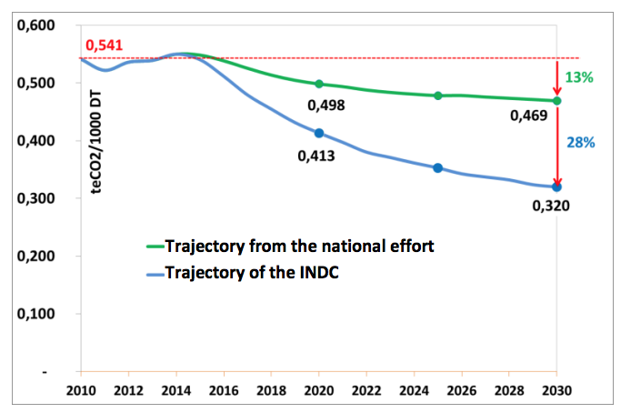
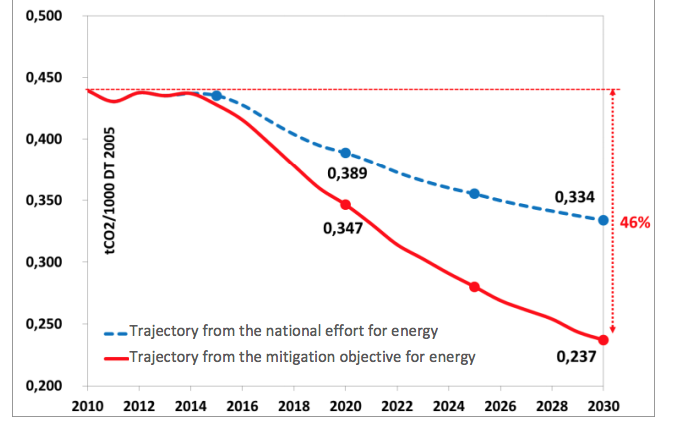

REPUBLIC OF TUNISIA
Ministry of Environment and Sustainable Development
UNITED NATIONS FRAMEWORK CONVENTION ON CLIMATE CHANGE
INTENDED NATIONALLY DETERMINED CONTRIBUTION
TUNISIA
AUGUST 2015
Introduction
This document summarizes the intended nationally determined contributions (INDC) of Tunisia for the purposes of its submission to the Conference of the Parties to the United Nations Framework Convention on Climate Change (UNFCCC). The report has been drawn up in accordance with decision 1/CP.20 (Lima call for climate action), which specifically draws attention, in paragraph 14, to the clarity, transparency and understanding of the INDC reports. It is based on important models and calculations of emissions reductions in various sectors, as well as ways of identifying and evaluating adaptation measures.
The document was drafted through broad cooperation between the main stakeholders involved in the topic of climate change in Tunisia, including public institutions, the private sector and civil society. Tunisia’s contributions were also by and large developed on the basis of existing sectoral and horizontal strategies, such as the national climate change strategy, drawn up in 2012; the energy efficiency strategy; the Tunisian Solar Plan and the adaptation strategies of a range of sectors and fields (coast, agriculture, water resources, health, tourism, and so on).
In its contribution, Tunisia proposes reducing its greenhouse gas emissions across all sectors (energy; industrial processes; agriculture, forestry and other land use; waste) in order to lower its carbon intensity by 41 per cent in 2030, relative to the base year 2010. Mitigation efforts will particularly centre on the energy sector, which alone accounts for 75 per cent of the emissions reductions contributing to this decrease in carbon intensity. As part of the energy transition policy advocated by the State, it is estimated that the energy sector will reduce its carbon intensity in 2030 by 46 per cent compared with 2010.
Tunisia, which has already made significant strides towards mitigation in its baseline, is looking to reduce its carbon intensity unconditionally and through its own efforts by 13 per cent compared to 2010, i.e. by around 1/3 of its INDC. To achieve the rest of its objective, i.e. an additional drop in carbon intensity of 28 per cent in 2030 compared to 2010, Tunisia is relying on the support of the international community for funding, capacity building and technology transfer.
The reduction in emissions compared to the baseline scenario would be in the order of 26 million tCO2eq in 2030, and 207 million tCO2eq for the period 2015-2030.
Implementation of the Tunisian contribution towards mitigation requires substantial funds to be mobilized - an estimated 18 billion US dollars - to cover investment needs and finance capacity building programmes.
The national effort required to achieve Tunisia’s unconditional contribution is estimated at nearly 10 per cent of the total mitigation investment needs. The national effort exclusively concerns the energy sector, which accounts for the most significant part of the investment needs.
In terms of adaptation, Tunisia remains very vulnerable to the global warming anticipated in the region and the corresponding implications of major increases in temperature, reduced precipitation and rising sea levels. The socio-economic and environmental impact will particularly affect water resources, agriculture, natural and artificial ecosystems, the coastline, health and tourism.
The additional costs of the necessary adaptation measures for these sectors and fields will come to some 2 billion dollars and should be borne completely by the international community as part of the global fight against climate change.
Altogether, the total additional financing required for mitigation and adaptation would be around 20 billion US dollars to fund investment requirements and capacity building.
1 National situation
Tunisia is situated in North Africa, covering an area of some 164,000 km² and with a 1,300 km coastline on the Mediterranean Sea. The climate is particularly arid and variable, with precipitation ranging from 800 mm per year in the north to 150 mm per year in the south.
The population growth rate has steadily been dropping, reaching 1 per cent per year during the past decade. Tunisia had some 11 million inhabitants in 2014, whereas it had 9.9 million in 2004.
Tunisia is considered to be one of the countries most exposed to climate change in the Mediterranean. The main risks which it is likely to confront are temperature increases, reduced precipitation, rising sea levels and escalating extreme weather phenomena (floods and droughts). These risks are likely to result in major environmental and socio-economic vulnerability.
Tunisia is aware of these challenges and has adopted a proactive policy of fighting climate change, both in terms of mitigation and adaptation.
Moreover, as Tunisia actively supports international efforts to combat climate change, it has delivered on all of its commitments to the UNFCCC, the last of which was the submission of the first biennial report in December 2014.
In addition, in the wake of the political changes triggered in December 2010, Tunisia adopted a new constitution on 26 January 2014, which incorporated the fight against climate change as a permanent feature. Under Article 44 of the new constitution, the State shall “provide the means necessary to guarantee a healthy and balanced environment and contribute to the climate’s integrity”.
The policy of fighting climate change is particularly emphasized in the energy sector. It is the case that, despite Tunisia’s efforts to manage its energy over the past three decades, the energy system is today facing significant challenges:
- Energy supply security issues due to the growing energy balance deficit and the heavy reliance on conventional energy;
- Economic sustainability issues associated with fluctuations in global energy prices and their implications regarding the balance of payments and public finances.
To meet these challenges, the Tunisian authorities have decided, since 2013, to forge ahead with an energy transition process based on an unprecedented strengthening of the energy management agenda and its two pillars of energy efficiency and renewable energies. This transition agenda aims for a reduction in primary energy demand of 30 per cent by 2030 compared to the baseline scenario, and a penetration rate of 30 per cent for renewable energies in electricity production.
2 The Tunisian contribution towards mitigation
2.1 Objective
Type of objective
% decrease in carbon intensity compared to the base year
Target year
2030
Implementation period
2015-2030
Base year
2010
Overall INDC objective
The aim of Tunisia’s contribution in the area of mitigation is to reduce its carbon intensity by 41 per cent compared to 2010. Carbon intensity is calculated as the relationship between the total amount of greenhouse gas emissions (expressed in tons of CO2 equivalent) and the GDP, with 2005 set as a continuous baseline.
In the specific sector of energy, Tunisia aims to reduce its carbon intensity by 46 per cent compared to 2010 levels.
Unconditional and conditionalmitigation objectives
Tunisia’s unconditional contribution corresponds to a 13 per cent reduction in carbon intensity, with 2010 as the base year, or around 1/3 of the overall objective.
The conditional contribution allows for an additional decrease of 28 per cent in carbon intensity, with 2010 as the base year.
The graph below represents the trajectory of Tunisia’s conditional and unconditional contribution for the period 2015-2030:
Trajectory of Tunisia’s conditional and unconditional contribution for the period 2015-2030

Equity and ambition
Tunisia, as a Non-Annex I Party to the UNFCCC, shall actively contribute to the planetary effort to mitigate greenhouse gas emissions. Tunisia considers its contribution to be fair and ambitious on three fundamental grounds:
- Through its total contribution (both unconditional and conditional), Tunisia aims to reduce its carbon intensity by 41 per cent compared to 2010. The national effort (equivalent to the unconditional contribution) would lead to a reduction of 13 per cent of the carbon intensity by 2030 compared to 2010 levels, i.e. almost 1/3 of the objective.
- Tunisia is committed to reducing its carbon intensity to below 2010 levels, although it contributed to only 0.07 per cent of global emissions in 2010.
- Thanks to its overall contribution, by 2030, emissions per capita would reach 3.4 tCO2eq per capita, whereas global emissions in 2010 had already reached 7 tCO2eq per capita.
2.2 Coverage and scope
| Geographical coverage |
The entire country |
| % of national emissions covered by mitigation efforts |
100 per cent of the emissions of 2010 |
| Target sectors |
Energy; industrial processes; agriculture, forestry and other land use (AFOLU); waste |
| Target gases |
CO2, CH4 and N2O |
2.3 Funding needs for mitigation
Investment needs
The mitigation objective would require a large total investment amount to be mobilized - around 17.5 billion US dollars over the period 2015-2030 - distributed among the following sectors:
Funding needs to support the INDC scenario for mitigating greenhouse gas emissions (millions of US dollars)
| SECTORS/FIELDS |
Total |
| Energy |
14,917 |
| Energy efficiency |
6,991 |
| Renewable energy |
7,926 |
| Agriculture, forestry and other land use (AFOLU) |
1,533 |
| Agriculture |
967 |
| Forestry and other land use |
566 |
| Waste |
972 |
| Solid waste |
70 |
| Sanitation |
902 |
| TOTAL |
17,422 |
Around 85 per cent of the funding needs would have to be mobilized for the energy sector: 40 per cent for energy efficiency and 45 per cent for renewable energies.
Capacity building and technology transfer needs
The capacity-building measures required to facilitate achievement of the INDC objective include, inter alia, training stakeholders, institutional development, technical assistance for sectoral mitigation programmes and support for R&D and innovation.
The total cost of covering capacity-building needs is estimated at about 523 million US dollars for the period 2015-2030, the majority of which will be earmarked for the energy sector (about 450 million US dollars).
In addition, technology transfer programmes will be required to allow Tunisia to gain access to know-how and appropriate industrial means in order to ensure the sustainability of its contribution. These transfers may take the form, for example, of industrial partnerships with parties holding the technologies. The Conference of the Parties to the Convention should also develop appropriate mechanisms to facilitate these transfers, depending on the specific needs for each mitigation measure adopted.
The national effort and support from international financing
- The national effort required to achieve Tunisia’s unconditional contribution is estimated at around 10 per cent of the total mitigation investment needs. The national effort exclusively concerns the energy sector, which accounts for the most significant part of the mitigation objective.
- International support should focus on funding the various remaining types of investment needs (concessional lines of credit, donations, direct investment, integration into carbon markets, etc.).
In the energy sector, some of the international financial support should serve to bolster the Energy Transition Fund (FTE). This fund was established by the Tunisian State in 2014 as a central instrument for implementing its energy transition agenda.
Finally, the international effort will also focus on the funding of capacity building and technology transfer programmes.
Usage of carbon market mechanisms
To support the financing needs of its mitigation objective, Tunisia would like to use carbon market mechanisms in addition to the direct financial supports listed above, particularly for the following programmes:
- Tunisian Solar Plan
- Mitigation in the cement industry and in any other sector which tends to be involved in carbon markets
- Energy efficiency and renewable energies in the building sector
2.4 Planning process
INDC preparation
The preparatory phases for the INDC were already under way in July 2014 with the launch of a series of consultation workshops bringing together the main stakeholders involved in the climate change process (public administration, civil society, private sector and industry experts).
This process has gathered momentum since publication of the Lima COP20 decisions defining the rules for achieving the INDCs and for their content. The consultation process continued until validation.
INDC implementation
In its standard development agenda, Tunisia is already striving to mitigate its greenhouse gas emissions in all of the key sectors which generate them: (i) The country has continuously pursued a proactive energy management policy for some 30 years and has one of the lowest energy intensities in the Middle East/ North Africa region, (ii) It has achieved major accomplishments in the reforestation and preservation of forested ecosystems, which are confirmed by the finding in the 2010 greenhouse gas inventory that the entire Agriculture, forestry and other land use (AFOLU) sector is a net CO2 absorber, (iii) It has always set store by improvement of agricultural productivity (including livestock) and optimization of the use of inputs, (iv) It has established the systematic introduction of controlled landfills and has, since 2006, launched Ministry of Sustainable Development projects for degasification and gas flaring across the country’s eight main landfills.
Tunisia was one of the pioneering countries in the drafting of several nationally appropriate mitigation actions (NAMAs), thereby standing ready to sign a new climate agreement, and was one of the first non-Annex I countries to submit its first biennial report (31 December 2014).
These numerous initiatives prove Tunisia’s determination to advance swiftly beyond the already proactive baseline which it has adopted for a number of years and to set out on a virtuous and ambitious path towards mitigating its emissions of greenhouse gases, drawing both on its own resources and on those of the international community.
As part of its contribution to tackling climate change issues, Tunisia will step up its efforts to mitigate greenhouse gas emissions in several sectors:
The energy sector: The aim of the mitigation plan is to intensify the promotion of energy efficiency in all consumer sectors and for all energy usages. Around 20 energy efficiency actions have been included in the calculation of avoidable emissions, covering the entire industrial, building, transport and agricultural sectors. This should allow primary energy demand to decrease by some 30 per cent by 2030 ,compared to the baseline.
The plan also advocates increasing the use of renewable energies, not least through the Tunisian Solar Plan (PST). This will raise the share of renewable energies in electricity production to 14 per cent in 2020 and to 30 per cent in 2030, whereas it stood at only 4 per cent in 2015.
To achieve this, the plan will aim to achieve an installed renewable energy capacity of 3,815 MW in 2030, including 1,755 MW for wind power, 1,610 MW for solar photovoltaic (PV) and 450 MW for concentrated solar power (CSP).
With regard to solar heating, Tunisia intends to triple the solar water heater distribution rate, which will exceed 220 m² of collectors per 1,000 inhabitants in 2030, compared to 73 in 2015.
Industrial processes sector: The mitigation plan includes the use of a NAMA in the cement industry from 2016 onwards and access of this sector to carbon markets from 2021 onwards.
Agriculture, Forestry and Changes in Land Use: The mitigation plan aims to intensify the CO2 absorption capacities of forestry and arboriculture by stepping up reforestation and by consolidating and increasing carbon reserves in forest and pastoral environments. The carbon footprint for agriculture will also be improved by using practices that generate fewer emissions, such as optimizing the diets of domestic animals, promoting biological agriculture or conservation- oriented agricultural practices, or recovering energy from animal waste.
Waste: The mitigation plan provides for the implementation, from 2016, of a plan to install facilities to transform solid waste into RDF (refuse derived fuel) introducing intended for cement facilities, as well as a programme for degasification systems in controlled landfills. It is planned to recover electricity from captured gases, at least at the main landfills. This energy option is covered in the low-carbon scenario for the energy sector.
The mitigation plan in the sanitation sector provides in particular for the installation of solar PV capacity at water treatment plants (STEPs), biogas digesters for electricity production and a reduction in the chemical oxygen demand (COD) of industrial wastewater.
Monitoring INDC implementation
To ensure the success and efficiency of the actions which make up its contribution, Tunisia will establish a rigorous system for monitoring and evaluating the actions and results achieved. This system will also enable the actions to be adjusted and potentially redirected. This system will be based on a comprehensive approach of Measurement, Notification and Verification (MRV) and will apply to all elements of the national strategy for mitigating greenhouse gas emissions. The Tunisian MRV system will revolve around three major elements of greenhouse gas emissions, namely:
- MRV of greenhouse gas national emissions, which will be responsible for the preparation each year of inventory data for greenhouse gases and for distributing and checking this data.
- MRV of mitigation measures, which will be responsible for monitoring, notifying and checking the impacts (emission reductions, carbon intensity, co-beneficiaries, etc.) of all mitigation measures, especially those developed under NAMA, in accordance with national and international regulations.
- MRV of support, which will be responsible for monitoring, notifying and checking greenhouse gas emission mitigation support and adaptation actions for which support has been received (funding, technology transfer and capacity building).
2.5 Methodological approaches
Inventory methodology
Inventory carried out in accordance with the 2006 IPCC guidelines.
Global warming potential
GWP values used from the document “IPCC Fourth Assessment Report- AR4 -Climate Change 2007”:
Baseline scenario
The approaches for calculating greenhouse gas emissions derive directly from the 2006 IPCC guidelines. The emissions calculation is based on estimated activity data, which is deduced from a simulation model using the following approaches:
- Energy sector: Emissions are assessed in the baseline scenario, mainly using a bottom-up approach based on modelling the final energy demand by sector and by type of energy using the MEDPRO prediction model. This then allows primary energy demand to be predicted per energy type on the basis of hypothetical parameter changes in the electricity sector (specific consumption, losses and mix).
The baseline scenario already includes a mitigation component since it corresponds to an average decrease in primary energy intensity in the order of 1 per cent per year for the period 2010-2030.
The baseline emissions are being evaluated, year by year, from 2010 to 2030, by applying the sectoral approach of the 2006 IPCC guidelines very carefully (activity data and emission factors by sector and by energy product). This sectoral approach covers CO2, CH4 and N2O. Annual baseline emissions are then expressed in tons of CO2 equivalent. This approach should make it easier to cross-check the results of this baseline against future greenhouse gas inventories which will be carried out under the MRV system in Tunisia.
The following graph shows the breakdown of the energy baseline by sector:

Breakdown of the energy baseline by sector
- Industrial processes: Emissions assessments for the baseline scenario mainly draw on the results of the cement sector NAMA. For other process sources, the simulations are based either on the relationship with GDP or on the principle of a fixed production value.
- Forestry and other land use: The baseline assumes continuation of the reforestation trend and conservation measures typically pursued by the Directorate-General for Forestry, as well as the same rate of progress in arboriculture. This trend scenario will therefore consolidate the status of this source of emissions/absorptions as a net absorber.
- Agriculture: The baseline assumes that current trends in given agricultural practices will continue, while including four mitigation actions depending on the current or planned rate (including poultry dung in composting processes, biological agriculture, stepping up the role of legumes in arable crops and optimizing the use of synthetic mineral fertilizers).
- Waste:
Solid waste: The baseline assumes that current waste management practices will continue, with waste being buried in controlled landfills. The baseline incorporates the emission reductions of the two Ministry of Sustainable Development degasification projects.
Waste water treatment: The baseline assumes that current sanitation practices will continue until 2030, but with particular efforts made towards energy efficiency.
Mitigation scenario
-
Energy sector: The mitigation scenario is proactive and incorporates ambitious programmes for developing energy efficiency and renewable energies. Two methods have been used to calculate emissions for this scenario:
- A modelling method using the MEDPRO predictive tool, identical to that used in the baseline case. In this case, the decrease in primary energy intensity is estimated at an average of about 2.5 per cent per year between 2010 and 2030.
- A bottom-up method consisting of: (1) identifying the energy renewable energy actions one by one, efficiency and (2) calculating the final energy savings expected for each form of energy, (3) calculating the primary energy savings for each of the actions on the basis of assumptions for the electricity sector (specific consumption, losses to the network and the mix), (4) calculating emissions avoided on the basis of emissions factors for each form of energy, (5) aggregating emissions avoided as a result of all of the actions, (6) subtracting these emissions from those of the baseline.
The two graphs below respectively show the reductions in greenhouse gas emissions due to energy efficiency measures (by sector) and due to renewable energies (by type).

Reductions in greenhouse gas emissions due to energy efficiency and renewable energies
This reduction thus makes it possible to reduce carbon intensity in the energy sector by approximately 46 per cent compared to 2010. About half of this reduction is due to the national effort, as shown in the following graph:

Trajectory for the decrease in carbon intensity in the energy sector
-
Industrial processes: The mitigation scenario for the processes sector covers the launch of NAMA Cement, which is a mitigation programme with four focuses: (i) Energy efficiency, (ii) Renewable energies, (iii) Co- incineration of solid waste, (iv) Segmentation of the cement market to reduce emissions deriving from processes.
The results of the first three actions are included in the mitigation scenario for the energy sector. The impact of segmentation of the cement market on emissions related to the clinkering process is also included here, however, the energy impact of this segmentation is included in the low-carbon scenario for the energy sector.
-
Forestry and other land usage: The mitigation scenario for the FAT sector assumes the strengthening of reforestation and conservation actions already considered in the baseline and the addition of three new actions. As with the baseline, the calculation method is based on the 2006 IPCC guidelines.
-
Agriculture: The mitigation scenario for the agricultural sector assumes the strengthening of actions already considered in the baseline and the addition of four new specific actions. Estimates of avoidable emissions are based firstly on the 2006 IPCC guidelines and secondly on international literature concerning certain mitigation actions. Mitigation actions regarding energy recovery from waste are listed in this sector, but the results of these actions are included in the low-carbon scenario for the energy sector.
-
Waste
Solid waste: this involves a bottom-up approach combining two actions:
- Introduction of the option to produce RDF to be used for combustion in the cement industry. NAMA Cement assumes the recovery of 3 million tons of solid waste (i.e. only 35 per cent of solid waste generated) for RDF production by 2030.
- Introduction of degasification systems for 50 per cent of the quantities of waste which will be buried in controlled landfills in the future, amounting to about 1.5 million tons of solid waste by 2030. The low-carbon scenario also covers degasification projects for the two Ministry of Sustainable Development projects beyond 2025.
Estimates of avoidable emissions are based on the calculation method from the 2006 IPCC approach. Emission reductions as a result of co- incineration are estimated on the basis of the quantity of waste which it is no longer necessary to put into landfill due to the usage of mechanical and biological processing for the production of RDF.
Emission reductions as a result of degasification systems on controlled landfills are estimated by using the most recent degasification indicators generated by Clean Development Mechanism (CDM) landfills in Tunisia.
The impact of potential projects to recover energy from landfills is included in the low-carbon scenario for the energy sector.
Wastewater treatment: this involves a bottom-up approach combining two renewable energy actions and one action to improve treatment processes in the industry. The approach for estimating avoidable emissions is derived from the method of calculating emissions for renewable electricity generation, based on an assumed COD reduction of about 15 per cent in industrial wastewater. Mitigation actions relating to renewable energies are listed in this sector, but the results of these actions are included in the mitigation scenario for the energy sector.
2.6 Expected emissions
Baseline emissions and those of the INDC scenario (MtCO2eq)
The following graph shows the respective trajectories of greenhouse gas emissions for the baseline, the unconditional national effort and the INDC scenario.

Trajectories of greenhouse gas emissions for the baseline, unconditional effort and INDC scenarios
The following table shows greenhouse gas emissions for the three scenarios up to 2020, 2025 and 2030.
|
2010 |
2020 |
2025 |
2030 |
| Baseline emissions |
28.3 |
39.8 |
51.6 |
68.2 |
| Emissions after unconditional efforts |
28.3 |
37.4 |
47.4 |
62.2 |
| Emissions including both conditional and unconditional efforts |
28.3 |
31.1 |
35.0 |
42.4 |
Emission reductions (MtCO2eq)
The following table shows the conditional and unconditional reductions in greenhouse gas emissions.
|
2020 |
2025 |
2030 |
Cumulative 2015-2030 |
| Unconditional |
2.4 |
4.3 |
6.0 |
51.6 |
| Conditional |
6.3 |
12.4 |
19.8 |
155.2 |
| Total |
8.7 |
16.7 |
25.8 |
206.8 |
Sectoral contribution to emissions reductions (up to 2030)
The constant decline in carbon intensity in Tunisia until 2030 stems from significant reductions in greenhouse gas emissions across all sectors. The energy sector remains the main contributor to the Tunisian objective in 2030, with 75 per cent of the reductions in emissions. Waste comes in second place, followed by forestry and other land use, and agriculture.
2.7 Other information: sustainable development impacts
Energy sector
- Primary energy savings: 7.6 Mtoe in 2030, and cumulatively 51 Mtoe over the period 2015-2030, 2/3 of which is in energy efficiency and 1/3 in renewable energies.
- Job creation: Approximately 58,000 job equivalents over the 2015- 2030 period, 75 per cent of which would come from energy efficiency measures in the building sector.
- Combating energy insecurity: reducing consumers’ energy bills,especially for the poorest strata of the population.
Forestry and other land usages
- Balance of ecosystems and preservation of the fertility of soils
- Improvement of the balance of fodder for feeding livestock
- Job creation and income-generating activities in rural zones
- Population stabilization and prevention of rural depopulation
Agriculture
- Improvements in the quality of livestock fodder and increases in the productivity of livestock farming
- Preservation of the quality and fertility of soils
- Promotion of biological agriculture and reduction of pollution from agricultural areas due to chemical fertilizers
- Improvements in the quality of manure and organic recovery of animal waste
3 The Tunisian contribution towards adaptation
Climate studies on Tunisia have shown that the country is very exposed to climate change and that its economy, population and ecosystems are therefore very vulnerable.
3.1 Tunisia’s exposure to climate change
Temperature
Average annual temperature increase across the entire country of +2.1°C until 2050.
Precipitation
By 2050, a drop of between 10 and 30 per cent - depending on the region - in the annual precipitation rate compared to the current situation. Alongside these falling values, there will be an increase in the frequency and intensity of the extreme weather phenomena: droughts and floods.
Rising sea levels
Heightened sensitivity of the 1,300 km coastline due to rising sea levels. By 2050, the sea level is expected to have risen on average by 30 to 50 cm, causing the beaches to shrink by 20 to 135 cm per year, depending on the coastline and the region.
3.2 Tunisia’s vulnerability to climate change
Water resources
With some 385 m3 of renewable blue water resources available per year and per capita, Tunisia is already experiencing water scarcity.
This situation is due to be exacerbated by climate change over the coming years, with the decrease in conventional water resources estimated at about 28 per cent by 2030. The decline in surface waters would be approaching 5 per cent by the same year.
Furthermore, following the expected rise in the sea level, losses through the salinization of coastal aquifers due to this rise in sea level would account for about 50 per cent of the current resources of these aquifers by 2030, amounting to almost 150 million m3.
Coastline
The physical vulnerability of the Tunisian coastline to rising sea levels has various direct and indirect socio-economic consequences:
- Loss by submersion of approximately 16,000 hectares of agricultural land in low-lying coastal areas,
- Loss by submersion of approximately 700,000 hectares of built-up areas,
- Loss by salinization of approximately 50 per cent of the resources currently available in coastal aquifers,
- Indirect loss of the potential for approximately 38,000 ha of irrigable land by 2050, i.e. 10 per cent of currently irrigated land,
- Decline in the activities of seafront hotels, which have a total capacity of approximately 30,000 beds, owing to retreating beaches,
- Decline in port and shore infrastructure.
The loss of productive capital caused by this damage is in the order of 2 billion US dollars. Losses in annual production are estimated at approximately 0.5 per cent of current GDP, mainly in the areas of tourism (55 per cent) and agriculture (45 per cent). An estimated 36,000 job losses, mainly in agriculture and tourism.
Agriculture
Droughts caused by climate change will particularly affect rainfed cereal farming interests, which would decrease from a current average land area of 1.5 million hectares to about 1 million hectares in 2030, i.e. a reduction of approximately 30 per cent.
Agricultural GDP following the reduction in land area, given yields identical to the reference situation, would fall by 5 to 10 per cent by 2030.
In the event of successive extreme droughts, the land area used for cereal crops and arboriculture (mainly regions in the centre and the south) will decrease by 200,000 and 800,000 hectares respectively. Lastly, the livestock population would decrease by about 80 per cent in the centre and the south, and 20 per cent in the north, owing to the loss of rough grazing areas.
Ecosystems
Concerning ecosystems, as well as water resources, the major effects may be observed in forests and pastoral ecosystems.
As temperatures and the inflammability of the biomass rise, the risk of large forest and bush fires also increases. It is estimated that 180,000 hectares of forest will have been lost by 2030. In the north of the country, such a risk will have an impact on the availability of water resources, and on the population and its heritage.
The steppe ecosystems of the centre and south of the country will see their pastoral functions decline in central Tunisia, and even cease in the south. The herds will fall back to the rough grazing areas in the north, burdening these further and thereby increasing the extent of overgrazing. In the event of climate change, if no action is taken to improve the production of rough grazing areas, the contribution of steppe ecosystems is likely to have ceased by 2050.
Health
The effects of climate change on health in Tunisia will take the form of:
- The resurgence and proliferation of certain vector-borne diseases, such as malaria, leishmaniasis or dengue,
- Respiratory diseases caused by the rise in temperature,
- Water-borne diseases caused by degradation of the bacteriological, physical and chemical quality of water resources.
Tourism
Tourism in Tunisia essentially revolves around its image as a beach and seaside resort, which means that it is particularly sensitive to the summer climate, rising sea levels and coastal erosion.
The rise in temperature will make the heat in summer more severe, affecting humans’ climate comfort and making heatwaves unbearable for the human body. The water stress already experienced by Tunisia will intensify, which will have repercussions on tourist facilities in terms of operating costs and health and safety.
Concerning coastal erosion, the annual losses to the tourist sector resulting from the retreat of the beaches due to the rising sea level are estimated at around 5 per cent of the sector’s added value.
3.3 Measures planned by Tunisia to adapt to climate change
Tunisia is aware of these challenges and has striven for several years to include adaptation to climate change in the development planning process at global and sectoral levels. Tunisia has therefore prepared a raft of measures focusing on the adaptation of six key sectors and ecosystems which are among the most vulnerable to the adverse effects of climate change.
Water resources
The adaptation measures proposed for water resources essentially consist in projects to transfer and reuse treated wastewater and to improve and secure the water supplies of large urban centres, especially Greater Tunis, Cap-bon, Sahel and Sfax.
Coastline
The projects planned essentially concern the rehabilitation of coasts and the prevention of coastal erosion: redeveloping and displacing coastal industrial zones; rehabilitating and protecting existing infrastructure against the risks of climatic impacts and developing farms and agricultural infrastructure.
Agriculture
The actions planned are essentially capacity-building and development measures: institutional
- Adapting irrigated crops in the central regions,
- Adapting mixed farming-livestock production to climate change in vulnerable regions,
- Updating the agricultural map to take into account the impacts of climate change,
- Introducing a climate monitoring and early warning system, as well as an insurance mechanism against climatic hazards due to climate change,
- Conserving and exploiting genetic heritage to adapt cereal crops to climate change, developing innovative systems for arable crops.
Ecosystems
A number of measures are planned for adapting ecosystems, which may be summarized as follows:
- Rehabilitation of forest nurseries and the expansion of indigenous and multi-use species,
- Holistic management of cork oak forests in zones at high risk of fire in the north-west of the country,
- Management of the degraded rough grazing and esparto areas in the central and southern regions,
- Conservation of the ecological functions of low-lying coastal areas,
- Integrated rural development of vulnerable drainage basins, sub- drainage basins and flood control,
- Biological consolidation of work to combat silting in the south of Tunisia and support the implementation of regional action plans to counter desertification.
Tourism
The main measures planned in the area of tourism can essentially be summarized as:
- Restoration of the Tunisian touristic sea coast and protection of tourist areas against the advance of the sea,
- Definition of climatic and touristic regions and adaptation of the division of eco-touristic circuits,
- Development of a range of services that are at once alternative and complementary to seaside tourism, particularly in terms of health, culture, sport and environment.
- Launch and promotion of the concept of ecological hotels,
- Optimization of the management of water resources by the tourist sector and installation of mini seawater desalination plants using renewable energies.
Health
This too essentially consists in measures for capacity-building and institutional support:
- Risk assessment and prevention of a proliferation of respiratory pathologies linked to climate change,
- Introduction of a network to monitor epidemics of the principle vector-borne diseases,
- Implementation and strengthening of the entomological monitoring network and efforts to fight mosquitoes and sand flies,
- Introduction of a programme to adapt the health system to climate change, especially through protection against water-borne diseases.
3.4 Needs for adaptation funding
Investment needs
The total funding needs for adaptation to climate change would stand at about 1.9 billion US dollars for the period 2015-2030. Besides a number of physical investments, these are mostly intangible investments to support and popularize new practices (institutional support, capacity building, research and development, etc.).
Funding needs to support the INDC adaptation effort
| SECTORS/FIELDS |
TOTAL |
| Water resources |
533 |
| Coastline |
556 |
| Agriculture |
21 |
| Ecosystems |
782 |
| Health |
7 |
| Tourism |
17 |
| TOTAL |
1,916 |
International support required for adaptation
Tunisia is appealing for international support to cover all of the additional costs for the adaptation of these sectors and fields.